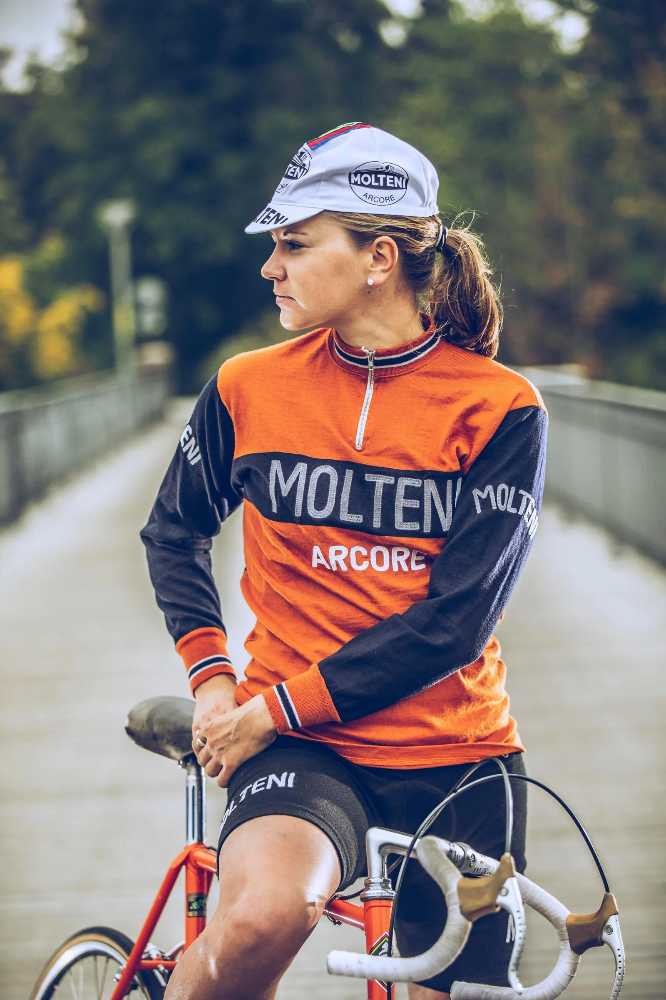
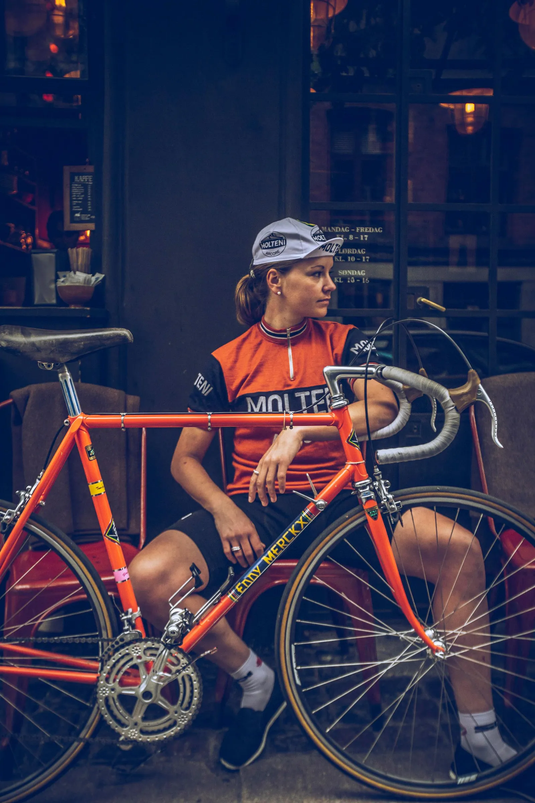
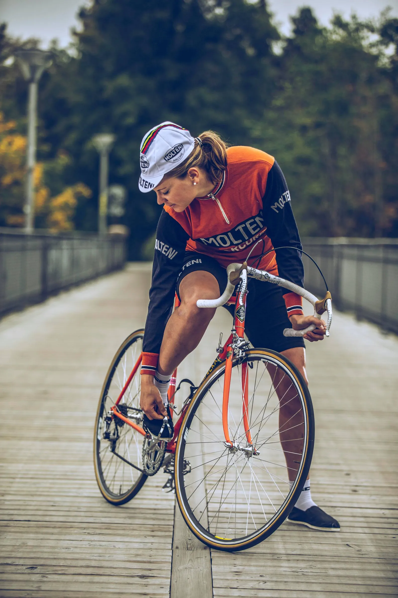
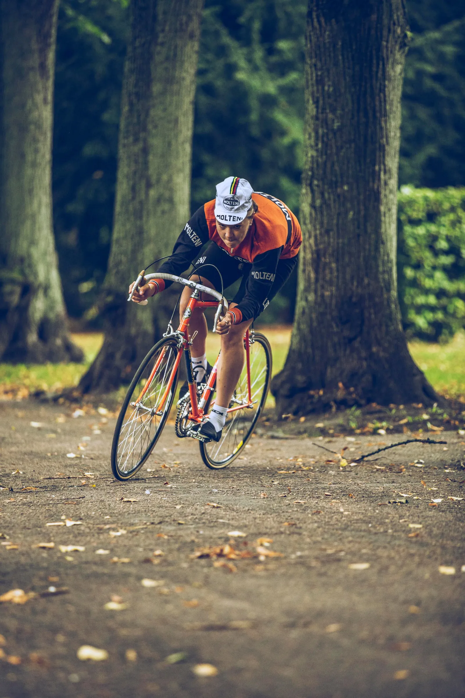

BREAKING: Trine Schmidt skifter til Molteni

Trine Schmidt, der er en af Danmarks mest succesfulde cykelryttere gennem tiderne og tidligere EM-guldvinder og VM-sølvvinder, bekender sig nu til vintagecykling og skifter til Squadra Molteni.
Efter mange år på internationale storhold som Team Hitec Products Uck, Team BMS BIRN, Lotto Soudal Ladies og senest Team Virtu Cycling Women, har Trine Schmidt valgt at fortsætte karrieren på danmarks stærkeste vintagecykelhold Squadra Molteni.


– Jeg må jo indrømme, at jeg har opdaget, at jeg er er lidt af en skabs-vintagecykelrytter, så da tilbudet kom, slog jeg til, fortæller Trine Schmidt.
Efter en længere skadesperiode med rygproblemer, er Trine Schmidt nu ved at være helt klar igen. I sidste weekend blev det til en 5. plads i omnium og en 6. plads i parløb ved Orlen Grand Prix Poland i polske Pruszków.
– Det er fedt at være tilbage igen. OL i 2020 er fortsat mit store mål. Da Team Virtu Cycling Women valgte at lukke, stod jeg i en rigtig træls situation. Jeg var skadet – og så er det ekstra svært, at være ude og jagte et nyt hold. Men nogle gange handler det om, at have de rette kontakter, fortæller Trine Schmidt og smiler.
For så dukkede Squadra Molteni op – og pludselig ser fremtiden meget lysere ud.


Squadra Moltenis Kaptajn Bjørnsteen er tydeligvis glad for, at have tegnet kontrakt med Trine Schmidt, men han lægger heller ikke skjul på, at der ligger nogle udfordringer forude for den stærke kvinderytter.
– Det er rigtig skønt, at vi kan hjælpe Trine med at komme videre, så hun kan nå sine mål. Men hun kommer også på lidt overarbejde her. Hun skal til at lære at køre med tåclips, hvilket allerede har kostet ét styrt midt i et lyskryds i København!
Så skal hun også vænne sig til skrårørsskiftere, og at vi kun kører med 6-speed. Og så skal hun lære at køre på grus. Men hun skal nok få lært det hele, for hun er en talentfuld ung kvinde, lyder det fra Kaptajn Bjørnsteen.


Kaptajn Bjørnsteen afslører også, at Trine vil blive en stor forstærkning for holdet ved den kommende sæsons store opgaver.
– Vi påtænker at slå vore egen timeverdensrekord på bane, men denne gang udendørs – og vi har også et stort etapeløb (Berlin – Vejle) i kikkerten, som vi gerne vi vinde, fortæller Kaptajnen.

